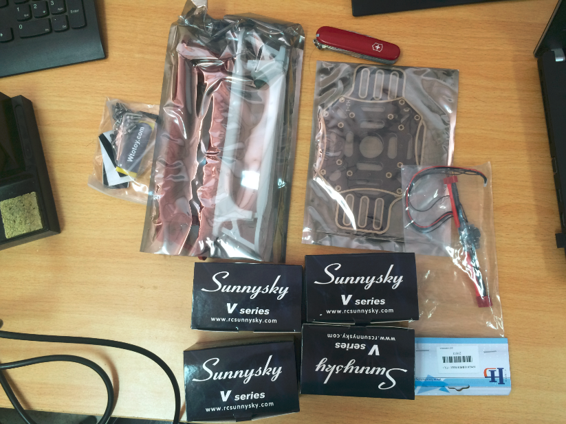
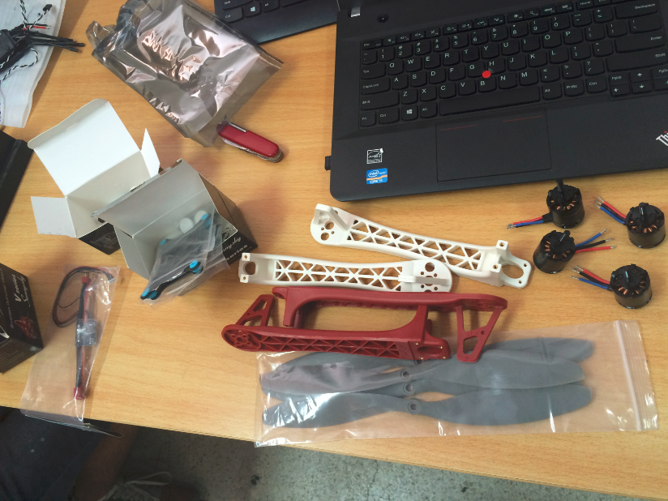
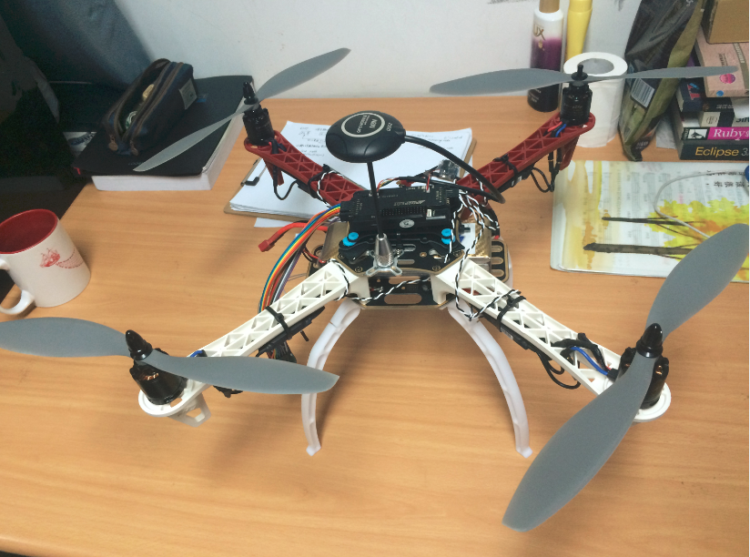

This is a list of my research projects.
Time: Aug. 2016 - Jun. 2017 (Expected)
  
Key Technology of Future IOT (Internet of Things)
Yuzhe Yang , Chao Yao , Lingyang Song.
We are now doing research on UAV(Unmanned Aerial Vehicles)-aided communication. By adding several written modules , we aim to realize new applications under new scenarios of wireless communication.
Above are images of our own built UAV.
We now try to use UAV sense the intensity of WiFi, and then do path programming automatically to locate the site of APs.